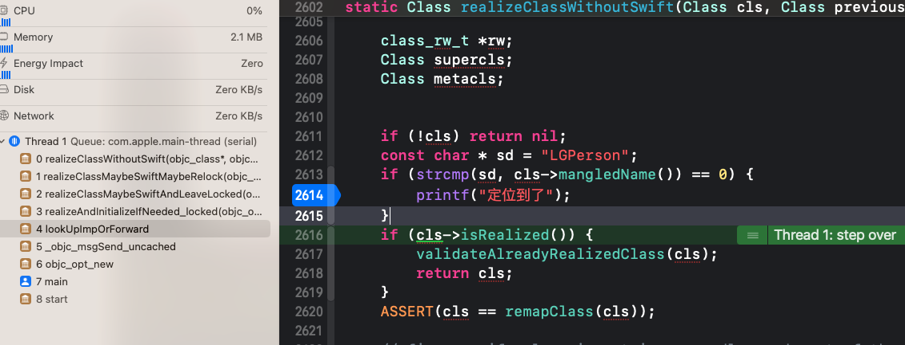
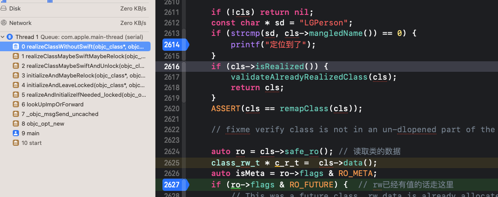
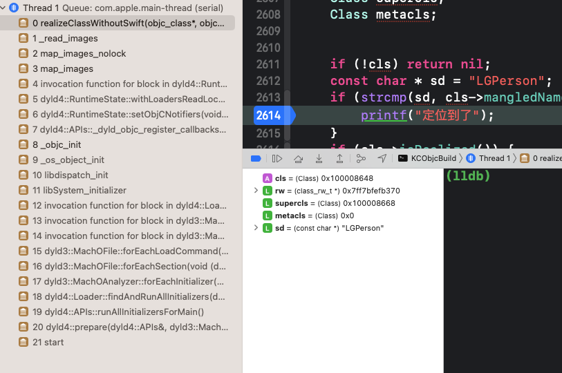
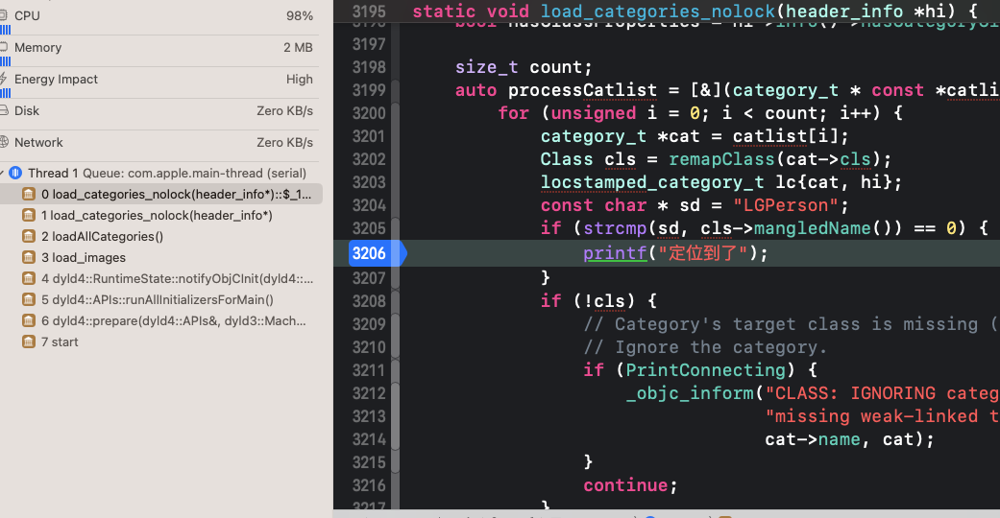
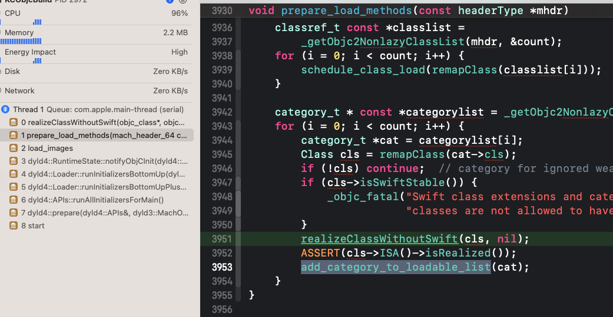
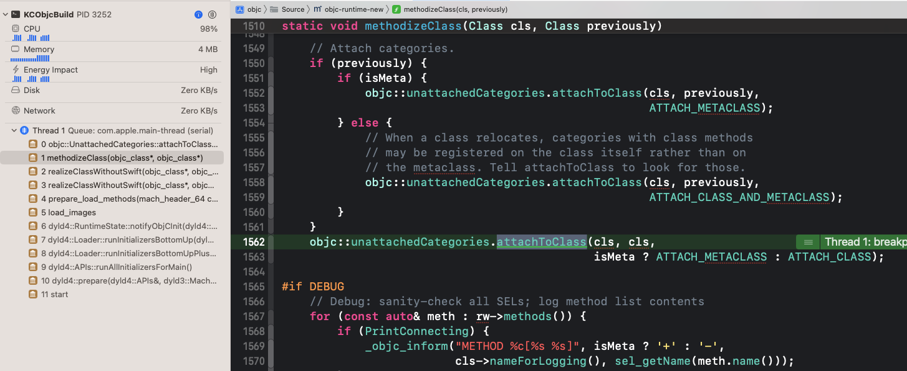

<!DOCTYPE html>


<html lang="en">
  

    <head>
      <meta charset="utf-8" />
        
      <meta
        name="viewport"
        content="width=device-width, initial-scale=1, maximum-scale=1"
      />
      <title>懒加载类以及分类的加载 |  ayer</title>
  <meta name="generator" content="hexo-theme-ayer">
      
      <link rel="shortcut icon" href="/favicon.ico" />
       
<link rel="stylesheet" href="/dist/main.css">

      <link
        rel="stylesheet"
        href="https://cdn.jsdelivr.net/gh/Shen-Yu/cdn/css/remixicon.min.css"
      />
      
<link rel="stylesheet" href="/css/custom.css">
 
      <script src="https://cdn.jsdelivr.net/npm/pace-js@1.0.2/pace.min.js"></script>
       
 

      <!-- mermaid -->
      
      <script src="https://cdn.jsdelivr.net/npm/mermaid@8.9.2/dist/mermaid.min.js"></script>
      
    <link rel="alternate" href="/atom.xml" title="ayer" type="application/atom+xml">
</head>
  </html>
</html>


<body>
  <div id="app">
    
      
    <main class="content on">
      <section class="outer">
  <article
  id="post-iOS学习/底层原理/懒加载类以及分类的加载"
  class="article article-type-post"
  itemscope
  itemprop="blogPost"
  data-scroll-reveal
>
  <div class="article-inner">
    
    <header class="article-header">
       
<h1 class="article-title sea-center" style="border-left:0" itemprop="name">
  懒加载类以及分类的加载
</h1>
 

      
    </header>
     
    <div class="article-meta">
      <a href="/2022/12/26/iOS%E5%AD%A6%E4%B9%A0/%E5%BA%95%E5%B1%82%E5%8E%9F%E7%90%86/%E6%87%92%E5%8A%A0%E8%BD%BD%E7%B1%BB%E4%BB%A5%E5%8F%8A%E5%88%86%E7%B1%BB%E7%9A%84%E5%8A%A0%E8%BD%BD/" class="article-date">
  <time datetime="2022-12-25T16:00:00.000Z" itemprop="datePublished">2022-12-26</time>
</a> 
  <div class="article-category">
    <a class="article-category-link" href="/categories/%E5%BA%95%E5%B1%82%E5%8E%9F%E7%90%86/">底层原理</a>
  </div>
  
<div class="word_count">
    <span class="post-time">
        <span class="post-meta-item-icon">
            <i class="ri-quill-pen-line"></i>
            <span class="post-meta-item-text"> Word count:</span>
            <span class="post-count">4.1k</span>
        </span>
    </span>

    <span class="post-time">
        &nbsp; | &nbsp;
        <span class="post-meta-item-icon">
            <i class="ri-book-open-line"></i>
            <span class="post-meta-item-text"> Reading time≈</span>
            <span class="post-count">19 min</span>
        </span>
    </span>
</div>
 
    </div>
      
    <div class="tocbot"></div>


  
    <div class="article-entry" itemprop="articleBody">
       
  <blockquote>
<p>官方在对类进行处理的时候, 为了提高对类处理的效率以及性能, 就对类进行了识别, 当类需要使用的时候, 系统才会对类进行实现. 如果没有使用就不会实现. 当需要实现才进行加载的类就被称为懒加载类. 反之无论是否使用到这个类, 都对这个类进行加载的类就被称为非懒加载类</p>
<ul>
<li>懒加载类和非懒加载类的区别在于是否实现了<code>+(void)load</code>方法<br>所有的类在使用前都会调用<code>realizeClassMaybeSwiftAndLeaveLocked</code>对类进行加载,通过这个来判断类和分类加载的时机</li>
</ul>
</blockquote>
<span id="more"></span>
<h3 id="验证的方式"><a href="#验证的方式" class="headerlink" title="验证的方式"></a>验证的方式</h3><blockquote>
<p>定义两个类<code>LGPerson</code>和<code>LGPerson(Text)</code>,在<code>load_categories_nolock</code><br>和<code>realizeClassWithoutSwift</code>源码中加入以下代码:</p>
</blockquote>
<ul>
<li>分类<code>load_categories_nolock</code><figure class="highlight plaintext"><table><tr><td class="gutter"><pre><span class="line">1</span><br><span class="line">2</span><br><span class="line">3</span><br><span class="line">4</span><br><span class="line">5</span><br><span class="line">6</span><br><span class="line">7</span><br><span class="line">8</span><br><span class="line">9</span><br><span class="line">10</span><br><span class="line">11</span><br><span class="line">12</span><br><span class="line">13</span><br><span class="line">14</span><br><span class="line">15</span><br></pre></td><td class="code"><pre><span class="line">//加载分类的地方</span><br><span class="line">static void load_categories_nolock(header_info *hi) &#123;</span><br><span class="line">    bool hasClassProperties = hi-&gt;info()-&gt;hasCategoryClassProperties();</span><br><span class="line"></span><br><span class="line">    size_t count;</span><br><span class="line">    auto processCatlist = [&amp;](category_t * const *catlist) &#123;</span><br><span class="line">        for (unsigned i = 0; i &lt; count; i++) &#123;</span><br><span class="line">            category_t *cat = catlist[i];</span><br><span class="line">            Class cls = remapClass(cat-&gt;cls);</span><br><span class="line">            locstamped_category_t lc&#123;cat, hi&#125;;</span><br><span class="line">            const char * sd = &quot;LGPerson&quot;;</span><br><span class="line">            if (strcmp(sd, cls-&gt;mangledName()) == 0) &#123;</span><br><span class="line">                printf(&quot;定位到了&quot;);</span><br><span class="line">            &#125;</span><br><span class="line">        ....</span><br></pre></td></tr></table></figure></li>
<li>类加载<code>realizeClassWithoutSwift</code><figure class="highlight plaintext"><table><tr><td class="gutter"><pre><span class="line">1</span><br><span class="line">2</span><br><span class="line">3</span><br><span class="line">4</span><br><span class="line">5</span><br><span class="line">6</span><br><span class="line">7</span><br><span class="line">8</span><br><span class="line">9</span><br><span class="line">10</span><br><span class="line">11</span><br><span class="line">12</span><br><span class="line">13</span><br><span class="line">14</span><br><span class="line">15</span><br><span class="line">16</span><br><span class="line">17</span><br><span class="line">18</span><br><span class="line">19</span><br></pre></td><td class="code"><pre><span class="line">static Class realizeClassWithoutSwift(Class cls, Class previously)</span><br><span class="line">&#123;</span><br><span class="line">    lockdebug::assert_locked(&amp;runtimeLock);</span><br><span class="line"></span><br><span class="line">    class_rw_t *rw;</span><br><span class="line">    Class supercls;</span><br><span class="line">    Class metacls;</span><br><span class="line">      </span><br><span class="line">    </span><br><span class="line">    if (!cls) return nil;</span><br><span class="line">    const char * sd = &quot;LGPerson&quot;;</span><br><span class="line">    if (strcmp(sd, cls-&gt;mangledName()) == 0) &#123;</span><br><span class="line">        printf(&quot;定位到了&quot;);</span><br><span class="line">    &#125;</span><br><span class="line">    if (cls-&gt;isRealized()) &#123;</span><br><span class="line">        validateAlreadyRealizedClass(cls);</span><br><span class="line">        return cls;</span><br><span class="line">    &#125;</span><br><span class="line">    .....</span><br></pre></td></tr></table></figure></li>
</ul>
<h3 id="懒加载类和分类"><a href="#懒加载类和分类" class="headerlink" title="懒加载类和分类"></a>懒加载类和分类</h3><blockquote>
<p>查看懒加载类和分类的加载时机</p>
</blockquote>
<figure class="highlight plaintext"><table><tr><td class="gutter"><pre><span class="line">1</span><br></pre></td><td class="code"><pre><span class="line">[[LGPerson alloc] init]</span><br></pre></td></tr></table></figure>
<h4 id="加载的时机"><a href="#加载的时机" class="headerlink" title="加载的时机"></a>加载的时机</h4><ol>
<li><p>第一次断点</p>
<ul>
<li>通过断点查看,显然懒加载类是在第一次调用类相关方法的时候，才会去加载类,首先会调用类方法<br></li>
<li><code>lldb</code>查看<code>class_ro_t</code>中的代码,首先调用的是<code>[LGPerson alloc]</code>，会先加载元类，并且从方法可知，<code>class_ro_t</code>中存放有分类的方法，<code>class_ro_t</code>从一开始是不能变的，显然分类中的方法，在编译期间，就加载到原始类的方法中了。<figure class="highlight plaintext"><table><tr><td class="gutter"><pre><span class="line">1</span><br><span class="line">2</span><br><span class="line">3</span><br><span class="line">4</span><br><span class="line">5</span><br><span class="line">6</span><br><span class="line">7</span><br><span class="line">8</span><br><span class="line">9</span><br><span class="line">10</span><br><span class="line">11</span><br><span class="line">12</span><br><span class="line">13</span><br><span class="line">14</span><br><span class="line">15</span><br><span class="line">16</span><br><span class="line">17</span><br><span class="line">18</span><br></pre></td><td class="code"><pre><span class="line">(lldb) p ro.baseMethods</span><br><span class="line">(const WrappedPtr&lt;method_list_t, method_list_t::Ptrauth&gt;) $2 = &#123;</span><br><span class="line">  ptr = 0x00000001000083f0</span><br><span class="line">&#125;</span><br><span class="line">  Fix-it applied, fixed expression was: </span><br><span class="line">    ro-&gt;baseMethods</span><br><span class="line">(lldb) p $2[0]</span><br><span class="line">(method_list_t) $3 = &#123;</span><br><span class="line">  entsize_list_tt&lt;method_t, method_list_t, 4294901763, method_t::pointer_modifier&gt; = (entsizeAndFlags = 24, count = 1)</span><br><span class="line">&#125;</span><br><span class="line">(lldb) p $3.get(0).big</span><br><span class="line">(method_t::big) $4 = &#123;</span><br><span class="line">  name = &quot;textCategory&quot;</span><br><span class="line">  types = 0x0000000100003f3e &quot;v16@0:8&quot;</span><br><span class="line">  imp = 0x00000001000037f0 (KCObjcBuild`+[LGPerson(Text) textCategory])</span><br><span class="line">&#125;</span><br><span class="line">  Fix-it applied, fixed expression was: </span><br><span class="line">    $3.get(0).big()</span><br></pre></td></tr></table></figure></li>
</ul>
</li>
<li><p>第二次断点</p>
<ul>
<li><p>通过断点查看<br></p>
</li>
<li><p><code>lldb</code>查看<code>class_ro_t</code>中的代码，这里回调用<code>init</code>,这里调用的是当前的实例方法，指向<code>LGPerson</code>,从其内存中也可发现分类中的方法一开始就在<code>class_ro_t</code>中</p>
<figure class="highlight plaintext"><table><tr><td class="gutter"><pre><span class="line">1</span><br><span class="line">2</span><br><span class="line">3</span><br><span class="line">4</span><br><span class="line">5</span><br><span class="line">6</span><br><span class="line">7</span><br><span class="line">8</span><br><span class="line">9</span><br><span class="line">10</span><br><span class="line">11</span><br><span class="line">12</span><br><span class="line">13</span><br><span class="line">14</span><br><span class="line">15</span><br><span class="line">16</span><br><span class="line">17</span><br><span class="line">18</span><br><span class="line">19</span><br><span class="line">20</span><br><span class="line">21</span><br><span class="line">22</span><br><span class="line">23</span><br><span class="line">24</span><br><span class="line">25</span><br><span class="line">26</span><br></pre></td><td class="code"><pre><span class="line">    p ro.baseMethods</span><br><span class="line">(const WrappedPtr&lt;method_list_t, method_list_t::Ptrauth&gt;) $6 = &#123;</span><br><span class="line">  ptr = 0x0000000100008410</span><br><span class="line">&#125;</span><br><span class="line">  Fix-it applied, fixed expression was: </span><br><span class="line">    ro-&gt;baseMethods</span><br><span class="line">(lldb) p $6[0]</span><br><span class="line">(method_list_t) $7 = &#123;</span><br><span class="line">  entsize_list_tt&lt;method_t, method_list_t, 4294901763, method_t::pointer_modifier&gt; = (entsizeAndFlags = 24, count = 17)</span><br><span class="line">&#125;</span><br><span class="line">(lldb) p $6[0].get(0).big</span><br><span class="line">(method_t::big) $8 = &#123;</span><br><span class="line">  name = &quot;textCategory&quot;</span><br><span class="line">  types = 0x0000000100003f3e &quot;v16@0:8&quot;</span><br><span class="line">  imp = 0x0000000100003820 (KCObjcBuild`-[LGPerson(Text) textCategory])</span><br><span class="line">&#125;</span><br><span class="line">  Fix-it applied, fixed expression was: </span><br><span class="line">    $6[0].get(0).big()</span><br><span class="line">(lldb) p $6[0].get(1).big</span><br><span class="line">(method_t::big) $9 = &#123;</span><br><span class="line">  name = &quot;text1&quot;</span><br><span class="line">  types = 0x0000000100003f3e &quot;v16@0:8&quot;</span><br><span class="line">  imp = 0x0000000100003880 (KCObjcBuild`-[LGPerson text1])</span><br><span class="line">&#125;</span><br><span class="line">  Fix-it applied, fixed expression was: </span><br><span class="line">    $6[0].get(1).big()</span><br></pre></td></tr></table></figure></li>
</ul>
</li>
<li><p>第三次断点</p>
</li>
</ol>
<ul>
<li>第三次断点，会去查找元类，由于元类已经初始化，会直接返回。且，整个过程中会不会触发，<code>load_categories_nolock</code>断点。</li>
</ul>
<ol start="4">
<li><p>查看加载完成类中的<code>class_rw_t</code>方法</p>
<figure class="highlight plaintext"><table><tr><td class="gutter"><pre><span class="line">1</span><br><span class="line">2</span><br><span class="line">3</span><br><span class="line">4</span><br><span class="line">5</span><br><span class="line">6</span><br><span class="line">7</span><br><span class="line">8</span><br><span class="line">9</span><br><span class="line">10</span><br><span class="line">11</span><br><span class="line">12</span><br><span class="line">13</span><br><span class="line">14</span><br><span class="line">15</span><br><span class="line">16</span><br><span class="line">17</span><br><span class="line">18</span><br><span class="line">19</span><br><span class="line">20</span><br><span class="line">21</span><br><span class="line">22</span><br><span class="line">23</span><br><span class="line">24</span><br><span class="line">25</span><br><span class="line">26</span><br><span class="line">27</span><br><span class="line">28</span><br><span class="line">29</span><br><span class="line">30</span><br><span class="line">31</span><br><span class="line">32</span><br><span class="line">33</span><br><span class="line">34</span><br><span class="line">35</span><br><span class="line">36</span><br><span class="line">37</span><br><span class="line">38</span><br><span class="line">39</span><br><span class="line">40</span><br><span class="line">41</span><br><span class="line">42</span><br><span class="line">43</span><br><span class="line">44</span><br><span class="line">45</span><br><span class="line">46</span><br><span class="line">47</span><br><span class="line">48</span><br><span class="line">49</span><br><span class="line">50</span><br><span class="line">51</span><br><span class="line">52</span><br></pre></td><td class="code"><pre><span class="line">(lldb) p (objc_class *)cls</span><br><span class="line">(objc_class *) $0 = 0x0000000100008600</span><br><span class="line">(lldb) p $0-&gt;data()</span><br><span class="line">(class_rw_t *) $1 = 0x00006000002349a0</span><br><span class="line">(lldb) p $1-&gt;methods()</span><br><span class="line">(const method_array_t) $2 = &#123;</span><br><span class="line">    list_array_tt&lt;method_t, method_list_t, method_list_t_authed_ptr&gt; = &#123;</span><br><span class="line">         = &#123;</span><br><span class="line">          list = &#123;</span><br><span class="line">            ptr = 0x0000000100008410</span><br><span class="line">          &#125;</span><br><span class="line">          arrayAndFlag = 4295001104</span><br><span class="line">        &#125;</span><br><span class="line">      &#125;</span><br><span class="line">    &#125;</span><br><span class="line">    (lldb) p $2.list[0]</span><br><span class="line">(method_list_t) $3 = &#123;</span><br><span class="line">entsize_list_tt&lt;method_t, method_list_t, 4294901763, method_t::pointer_modifier&gt; = (entsizeAndFlags = 27, count = 17)</span><br><span class="line">&#125;</span><br><span class="line">(lldb) p $2.list[0].get(0).big</span><br><span class="line">(method_t::big) $4 = &#123;</span><br><span class="line">    name = &quot;textCategory&quot;</span><br><span class="line">    types = 0x0000000100003f44 &quot;v16@0:8&quot;</span><br><span class="line">    imp = 0x0000000100003820 (KCObjcBuild`-[LGPerson(Text) textCategory])</span><br><span class="line">&#125;</span><br><span class="line">Fix-it applied, fixed expression was: </span><br><span class="line">$2.list[0].get(0).big()</span><br><span class="line">(lldb) p $2.list[0].get(1).big</span><br><span class="line">(method_t::big) $5 = &#123;</span><br><span class="line">    name = &quot;text1&quot;</span><br><span class="line">    types = 0x0000000100003f44 &quot;v16@0:8&quot;</span><br><span class="line">    imp = 0x0000000100003880 (KCObjcBuild`-[LGPerson text1])</span><br><span class="line">&#125;</span><br><span class="line">Fix-it applied, fixed expression was: </span><br><span class="line">     $2.list[0].get(1).big()</span><br><span class="line">(lldb) p $2.list[1].get(0).big</span><br><span class="line">(method_t::big) $6 = &#123;</span><br><span class="line">    name = &quot;v16@0:8&quot;</span><br><span class="line">    types = 0x0000000100003820 &quot;UH\x89\xe5H\x83\xec\U00000010H\x89&#125;\xf0H\x89u\xf8H\x8d=\x89\b&quot;</span><br><span class="line">    imp = 0x0000000100003e33 (&quot;text1&quot;)</span><br><span class="line">&#125;</span><br><span class="line">    Fix-it applied, fixed expression was: </span><br><span class="line">    $2.list[1].get(0).big()</span><br><span class="line">(lldb) p $2.list[2].get(0).big</span><br><span class="line">(method_t::big) $7 = &#123;</span><br><span class="line">name = &quot;UH\x89\xe5H\x83\xec\U00000010H\x89&#125;\xf0H\x89u\xf8H\x8d=\x89\b&quot;</span><br><span class="line">types = 0x0000000100003e33 &quot;text1&quot;</span><br><span class="line">    imp = 0x0000000100003f44 (&quot;v16@0:8&quot;)</span><br><span class="line">&#125;</span><br><span class="line">Fix-it applied, fixed expression was: </span><br><span class="line">$2.list[2].get(0).big()</span><br><span class="line">(lldb)</span><br></pre></td></tr></table></figure></li>
<li><p>总结</p>
<blockquote>
<p>懒加载中的类和分类，在方法初始化的时候才会去,调用<code>realizeClassWithoutSwift</code>,加载类;<br>懒加载类中的分类方法，一开始就在类的<code>class_ro_t</code>中类，即类加载之前。表明在编译的时候就加到类中了。整个过程中不会去调用<code>load_categories_nolock</code>(将分类方法加到类中)。</p>
</blockquote>
</li>
</ol>
<h3 id="非懒加载类和懒加载分类"><a href="#非懒加载类和懒加载分类" class="headerlink" title="非懒加载类和懒加载分类"></a>非懒加载类和懒加载分类</h3><blockquote>
<p>类中实现load方法，分类中不实现。上述一样的排查方式</p>
</blockquote>
<h4 id="加载的时机-1"><a href="#加载的时机-1" class="headerlink" title="加载的时机"></a>加载的时机</h4><ol>
<li><p>第一次断点</p>
<ul>
<li>通过断点查看,显然在<code>runtime</code>启动的时候，在<code>read_images</code>时，对所有的非懒加载类，进行了加载，并且先加载的时候类，而非元类<br></li>
<li><code>lldb</code>查看此时类中<code>class_ro_t</code>中的方法可知,懒加载分类中的方法，一开始就在类中，并在编译的时候就确定了<figure class="highlight plaintext"><table><tr><td class="gutter"><pre><span class="line">1</span><br><span class="line">2</span><br><span class="line">3</span><br><span class="line">4</span><br><span class="line">5</span><br><span class="line">6</span><br><span class="line">7</span><br><span class="line">8</span><br><span class="line">9</span><br><span class="line">10</span><br><span class="line">11</span><br><span class="line">12</span><br><span class="line">13</span><br><span class="line">14</span><br><span class="line">15</span><br><span class="line">16</span><br><span class="line">17</span><br><span class="line">18</span><br><span class="line">19</span><br><span class="line">20</span><br><span class="line">21</span><br><span class="line">22</span><br><span class="line">23</span><br><span class="line">24</span><br></pre></td><td class="code"><pre><span class="line">(lldb) p ro.baseMethods[0].get(0).big()</span><br><span class="line">   (method_t::big) $4 = &#123;</span><br><span class="line">     name = &quot;textCategory2&quot;</span><br><span class="line">     types = 0x0000000100003f47 &quot;v16@0:8&quot;</span><br><span class="line">     imp = 0x0000000100003770 (KCObjcBuild`-[LGPerson(Text2) textCategory2])</span><br><span class="line">   &#125;</span><br><span class="line">     Fix-it applied, fixed expression was: </span><br><span class="line">       ro-&gt;baseMethods[0].get(0).big()</span><br><span class="line">   (lldb) p ro.baseMethods[0].get(1).big()</span><br><span class="line">   (method_t::big) $5 = &#123;</span><br><span class="line">     name = &quot;textCategory&quot;</span><br><span class="line">     types = 0x0000000100003f47 &quot;v16@0:8&quot;</span><br><span class="line">     imp = 0x00000001000037d0 (KCObjcBuild`-[LGPerson(Text) textCategory])</span><br><span class="line">   &#125;</span><br><span class="line">     Fix-it applied, fixed expression was: </span><br><span class="line">       ro-&gt;baseMethods[0].get(1).big()</span><br><span class="line">   (lldb) p ro.baseMethods[0].get(2).big()</span><br><span class="line">   (method_t::big) $6 = &#123;</span><br><span class="line">     name = &quot;text1&quot;</span><br><span class="line">     types = 0x0000000100003f47 &quot;v16@0:8&quot;</span><br><span class="line">     imp = 0x0000000100003830 (KCObjcBuild`-[LGPerson text1])</span><br><span class="line">   &#125;</span><br><span class="line">     Fix-it applied, fixed expression was: </span><br><span class="line">       ro-&gt;baseMethods[0].get(2).big()</span><br></pre></td></tr></table></figure></li>
</ul>
</li>
<li><p>第二次断点，会去加载元类，且从<code>lldb</code>查看，元类中的<code>class_ro_t</code>中，同样一开始就有分类中的方法，是在编译的时候，分类方法就加载到类中了</p>
</li>
<li><p>总结</p>
<blockquote>
<p>非懒加载中的类和懒加载分类，在<code>runtime</code>初始化的时候,在<code>read_images</code>时,调用<code>realizeClassWithoutSwift</code>加载类;<br>懒加载分类中的方法，一开始就在非懒加类的<code>class_ro_t</code>中类，即类加载之前。表明在编译的时候就加到类中了。整个过程中不会去调用<code>load_categories_nolock</code>(将分类方法加到类中)。</p>
</blockquote>
</li>
</ol>
<h3 id="懒加载类和非懒加载分类"><a href="#懒加载类和非懒加载分类" class="headerlink" title="懒加载类和非懒加载分类"></a>懒加载类和非懒加载分类</h3><blockquote>
<p>分类中实现load方法，类中不实现。上述一样的排查方式</p>
</blockquote>
<h4 id="一个懒加载分类"><a href="#一个懒加载分类" class="headerlink" title="一个懒加载分类"></a>一个懒加载分类</h4><blockquote>
<p><code>LGPerson(Text)</code>分类中实现load方法,<code>LGPerson (Text2)</code>中不实现</p>
</blockquote>
<ol>
<li>第一次断点<ul>
<li>通过断点查看,和上一节一样,<code>runtime</code>启动的时候，在<code>read_images</code>时，对所有的非懒加载类，进行了加载。这里显然,懒加载的类由于非懒加载的分类，而变成了非懒加载类。一样先加载的时候类，而非元类<br></li>
<li><code>lldb</code>查看<code>class_ro_t</code>中的方法，发现非懒加载分类<code>LGPerson(Text2)</code>和懒加载分类<code>LGPerson(Text)</code>中的方法，一开始就在懒加载类中，显然也是由编译的时候就加到类中了，不区分，懒加载和非懒加载<figure class="highlight plaintext"><table><tr><td class="gutter"><pre><span class="line">1</span><br><span class="line">2</span><br><span class="line">3</span><br><span class="line">4</span><br><span class="line">5</span><br><span class="line">6</span><br><span class="line">7</span><br><span class="line">8</span><br><span class="line">9</span><br><span class="line">10</span><br><span class="line">11</span><br><span class="line">12</span><br><span class="line">13</span><br><span class="line">14</span><br><span class="line">15</span><br><span class="line">16</span><br><span class="line">17</span><br><span class="line">18</span><br><span class="line">19</span><br><span class="line">20</span><br><span class="line">21</span><br><span class="line">22</span><br><span class="line">23</span><br><span class="line">24</span><br></pre></td><td class="code"><pre><span class="line"> (lldb) p ro.baseMethods[0].get(0).big()</span><br><span class="line">(method_t::big) $8 = &#123;</span><br><span class="line">  name = &quot;textCategory2&quot;</span><br><span class="line">  types = 0x0000000100003f41 &quot;v16@0:8&quot;</span><br><span class="line">  imp = 0x0000000100003750 (KCObjcBuild`-[LGPerson(Text2) textCategory2])</span><br><span class="line">&#125;</span><br><span class="line">  Fix-it applied, fixed expression was: </span><br><span class="line">    ro-&gt;baseMethods[0].get(0).big()</span><br><span class="line">(lldb) p ro.baseMethods[0].get(1).big()</span><br><span class="line">(method_t::big) $9 = &#123;</span><br><span class="line">  name = &quot;textCategory&quot;</span><br><span class="line">  types = 0x0000000100003f41 &quot;v16@0:8&quot;</span><br><span class="line">  imp = 0x00000001000037e0 (KCObjcBuild`-[LGPerson(Text) textCategory])</span><br><span class="line">&#125;</span><br><span class="line">  Fix-it applied, fixed expression was: </span><br><span class="line">    ro-&gt;baseMethods[0].get(1).big()</span><br><span class="line">(lldb) p ro.baseMethods[0].get(2).big()</span><br><span class="line">(method_t::big) $10 = &#123;</span><br><span class="line">  name = &quot;text1&quot;</span><br><span class="line">  types = 0x0000000100003f41 &quot;v16@0:8&quot;</span><br><span class="line">  imp = 0x0000000100003840 (KCObjcBuild`-[LGPerson text1])</span><br><span class="line">&#125;</span><br><span class="line">  Fix-it applied, fixed expression was: </span><br><span class="line">    ro-&gt;baseMethods[0].get(2).big()</span><br></pre></td></tr></table></figure></li>
</ul>
<ol start="2">
<li>第二次断点，会去加载元类，且从<code>lldb</code>查看，元类中的<code>class_ro_t</code>中，同样一开始就有分类中的方法，是在编译的时候，分类方法就加载到类中了</li>
</ol>
</li>
<li>总结<blockquote>
<p>懒加载中的类和一个非懒加载分类，和上一节，非懒加载类和分类中的表现一致。</p>
</blockquote>
</li>
</ol>
<h4 id="一个以上懒加载分类"><a href="#一个以上懒加载分类" class="headerlink" title="一个以上懒加载分类"></a>一个以上懒加载分类</h4><blockquote>
<p><code>LGPerson(Text)</code>和<code>LGPerson (Text2)</code>分类中均实现load方法，<code>LGPerson (Text2)</code>分类中不实现</p>
</blockquote>
<ol>
<li><p>第一次断点</p>
<ul>
<li>在<code>runtime</code>加载阶段，<code>load_images</code>时，在<code>load_categories_nolock</code>,加载所有分类时。<code>load_images</code>在<code>read_images</code>之后，并且之前并未有断点，显然，此时，类并未加载。<br></li>
<li><code>lldb</code>查看根据分类<code>remapClass</code>出的类，查看其中<code>class_ro_t</code>的方法,显然，最开始的类中不包含分类<code>LGPerson(Text)</code>、<code>LGPerson (Text2)</code>和<code>LGPerson (Text3)</code>的方法<figure class="highlight plaintext"><table><tr><td class="gutter"><pre><span class="line">1</span><br><span class="line">2</span><br><span class="line">3</span><br><span class="line">4</span><br><span class="line">5</span><br><span class="line">6</span><br><span class="line">7</span><br><span class="line">8</span><br><span class="line">9</span><br><span class="line">10</span><br><span class="line">11</span><br><span class="line">12</span><br><span class="line">13</span><br><span class="line">14</span><br><span class="line">15</span><br><span class="line">16</span><br><span class="line">17</span><br><span class="line">18</span><br><span class="line">19</span><br><span class="line">20</span><br><span class="line">21</span><br><span class="line">22</span><br></pre></td><td class="code"><pre><span class="line">(lldb)  p (objc_class *)cls</span><br><span class="line">    (objc_class *) $0 = 0x0000000100008778</span><br><span class="line">(lldb) p $0.safe_ro()</span><br><span class="line">    (const class_ro_t *) $1 = 0x0000000100008500</span><br><span class="line">      Fix-it applied, fixed expression was: </span><br><span class="line">        $0-&gt;safe_ro()</span><br><span class="line">(lldb) p $1.baseMethods[0].get(0).big()</span><br><span class="line">    (method_t::big) $2 = &#123;</span><br><span class="line">      name = &quot;text1&quot;</span><br><span class="line">      types = 0x0000000100003f39 &quot;v16@0:8&quot;</span><br><span class="line">      imp = 0x0000000100003820 (KCObjcBuild`-[LGPerson text1])</span><br><span class="line">    &#125;</span><br><span class="line">      Fix-it applied, fixed expression was: </span><br><span class="line">        $1-&gt;baseMethods[0].get(0).big()</span><br><span class="line">(lldb) p $1.baseMethods[0].get(1).big()</span><br><span class="line">    (method_t::big) $3 = &#123;</span><br><span class="line">      name = &quot;text2&quot;</span><br><span class="line">      types = 0x0000000100003f39 &quot;v16@0:8&quot;</span><br><span class="line">      imp = 0x0000000100003850 (KCObjcBuild`-[LGPerson text2])</span><br><span class="line">    &#125;</span><br><span class="line">      Fix-it applied, fixed expression was: </span><br><span class="line">        $1-&gt;baseMethods[0].get(1).big()</span><br></pre></td></tr></table></figure></li>
<li><code>lldb</code>查看<code>category_t</code>中的方法，很显然是<code>LGPerson(Text)</code>,<figure class="highlight plaintext"><table><tr><td class="gutter"><pre><span class="line">1</span><br><span class="line">2</span><br><span class="line">3</span><br><span class="line">4</span><br><span class="line">5</span><br><span class="line">6</span><br><span class="line">7</span><br><span class="line">8</span><br><span class="line">9</span><br><span class="line">10</span><br><span class="line">11</span><br><span class="line">12</span><br><span class="line">13</span><br><span class="line">14</span><br><span class="line">15</span><br><span class="line">16</span><br><span class="line">17</span><br><span class="line">18</span><br><span class="line">19</span><br><span class="line">20</span><br><span class="line">21</span><br><span class="line">22</span><br><span class="line">23</span><br><span class="line">24</span><br><span class="line">25</span><br></pre></td><td class="code"><pre><span class="line">    (lldb) p cat.instanceMethods[0].get(0).big()</span><br><span class="line">(method_t::big) $4 = &#123;</span><br><span class="line">  name = &quot;textCategory&quot;</span><br><span class="line">  types = 0x0000000100003f43 &quot;v16@0:8&quot;</span><br><span class="line">  imp = 0x00000001000037d0 (KCObjcBuild`-[LGPerson(Text) textCategory])</span><br><span class="line">&#125;</span><br><span class="line">  Fix-it applied, fixed expression was: </span><br><span class="line">    cat-&gt;instanceMethods[0].get(0).big()</span><br><span class="line">(lldb) p cat.classMethods[0].get(0).big()</span><br><span class="line">(method_t::big) $5 = &#123;</span><br><span class="line">  name = &quot;load&quot;</span><br><span class="line">  types = 0x0000000100003f43 &quot;v16@0:8&quot;</span><br><span class="line">  imp = 0x0000000100003770 (KCObjcBuild`+[LGPerson(Text) load])</span><br><span class="line">&#125;</span><br><span class="line">  Fix-it applied, fixed expression was: </span><br><span class="line">    cat-&gt;classMethods[0].get(0).big()</span><br><span class="line">(lldb) p cat.classMethods[0].get(1).big()</span><br><span class="line">(method_t::big) $6 = &#123;</span><br><span class="line">  name = &quot;textCategory&quot;</span><br><span class="line">  types = 0x0000000100003f43 &quot;v16@0:8&quot;</span><br><span class="line">  imp = 0x00000001000037a0 (KCObjcBuild`+[LGPerson(Text) textCategory])</span><br><span class="line">&#125;</span><br><span class="line">  Fix-it applied, fixed expression was: </span><br><span class="line">    cat-&gt;classMethods[0].get(1).big()</span><br><span class="line">(lldb) </span><br></pre></td></tr></table></figure></li>
</ul>
</li>
<li><p>第二,三次断点</p>
<ul>
<li>仍然在分类加载的循环中，一共有3个分类会，加载3次。</li>
<li><code>lldb</code>查看类的<code>class_ro_t</code>的方法,类<code>class_ro_t</code>并未发生任何改变,并且由于类未加载，<code>class_rw_t</code>还未生成。显然分类中的方法并未加载到类中。<figure class="highlight plaintext"><table><tr><td class="gutter"><pre><span class="line">1</span><br><span class="line">2</span><br><span class="line">3</span><br><span class="line">4</span><br><span class="line">5</span><br><span class="line">6</span><br><span class="line">7</span><br><span class="line">8</span><br><span class="line">9</span><br><span class="line">10</span><br><span class="line">11</span><br><span class="line">12</span><br><span class="line">13</span><br><span class="line">14</span><br><span class="line">15</span><br><span class="line">16</span><br><span class="line">17</span><br><span class="line">18</span><br><span class="line">19</span><br></pre></td><td class="code"><pre><span class="line"> (lldb) p (objc_class *)cls</span><br><span class="line">        (objc_class *) $10 = 0x0000000100008778</span><br><span class="line"> (lldb) p $10.safe_ro().baseMethods[0].get(0).big()</span><br><span class="line">        (method_t::big) $11 = &#123;</span><br><span class="line">          name = &quot;text1&quot;</span><br><span class="line">          types = 0x0000000100003f39 &quot;v16@0:8&quot;</span><br><span class="line">          imp = 0x0000000100003820 (KCObjcBuild`-[LGPerson text1])</span><br><span class="line">        &#125;</span><br><span class="line">          Fix-it applied, fixed expression was: </span><br><span class="line">            $10-&gt;safe_ro()-&gt;baseMethods[0].get(0).big()</span><br><span class="line">(lldb) p $10.safe_ro().baseMethods[0].get(1).big()</span><br><span class="line">        (method_t::big) $12 = &#123;</span><br><span class="line">          name = &quot;text2&quot;</span><br><span class="line">          types = 0x0000000100003f39 &quot;v16@0:8&quot;</span><br><span class="line">          imp = 0x0000000100003850 (KCObjcBuild`-[LGPerson text2])</span><br><span class="line">        &#125;</span><br><span class="line">          Fix-it applied, fixed expression was: </span><br><span class="line">            $10-&gt;safe_ro()-&gt;baseMethods[0].get(1).big()</span><br><span class="line">(lldb) </span><br></pre></td></tr></table></figure></li>
<li><ul>
<li><code>lldb</code>查看<code>category_t</code>中的方法，第二次是<code>LGPerson(Text2)</code>,第三次是<code>LGPerson(Text3)</code></li>
</ul>
</li>
<li>此外，没有加载的类，无法<code>attach分类方法</code>，会调用方法<code>objc::unattachedCategories.addForClass</code>方法。里面也有个<code>attachToClass</code>方法，在里面增加断点。  <figure class="highlight plaintext"><table><tr><td class="gutter"><pre><span class="line">1</span><br><span class="line">2</span><br><span class="line">3</span><br><span class="line">4</span><br><span class="line">5</span><br></pre></td><td class="code"><pre><span class="line">if (cls-&gt;ISA()-&gt;isRealized()) &#123;</span><br><span class="line">                attachCategories(cls-&gt;ISA(), &amp;lc, 1, ATTACH_EXISTING | ATTACH_METACLASS);</span><br><span class="line">            &#125; else &#123;</span><br><span class="line">                objc::unattachedCategories.addForClass(lc, cls-&gt;ISA());</span><br><span class="line">            &#125;</span><br></pre></td></tr></table></figure></li>
</ul>
</li>
<li><p><code>realizeClassWithoutSwift</code>中的断点</p>
<ul>
<li><p>在后续调用<code>prepare_load_methods</code>,加载所有分类中的<code>load</code>方法时，会调用<code>realizeClassWithoutSwift</code>开始加载类。和此前一样，先类，在元类。<br></p>
</li>
<li><p>在上面新增的断点<code>attachToClass</code>中触发了，这里是对元类方法对，分类方法进行添加<br>  </p>
</li>
<li><p><code>lldb</code>查看添加完后的<code>class_rw_t</code>,显然，元类中的分类的方法已经添加完毕</p>
  <figure class="highlight plaintext"><table><tr><td class="gutter"><pre><span class="line">1</span><br><span class="line">2</span><br><span class="line">3</span><br><span class="line">4</span><br><span class="line">5</span><br><span class="line">6</span><br><span class="line">7</span><br><span class="line">8</span><br><span class="line">9</span><br><span class="line">10</span><br><span class="line">11</span><br><span class="line">12</span><br><span class="line">13</span><br><span class="line">14</span><br><span class="line">15</span><br><span class="line">16</span><br><span class="line">17</span><br><span class="line">18</span><br><span class="line">19</span><br><span class="line">20</span><br><span class="line">21</span><br><span class="line">22</span><br><span class="line">23</span><br><span class="line">24</span><br><span class="line">25</span><br><span class="line">26</span><br><span class="line">27</span><br><span class="line">28</span><br><span class="line">29</span><br><span class="line">30</span><br></pre></td><td class="code"><pre><span class="line">(lldb)  p rw.methods.beginLists()[0][0]</span><br><span class="line">(method_list_t) $3 = &#123;</span><br><span class="line">  entsize_list_tt&lt;method_t, method_list_t, 4294901763, method_t::pointer_modifier&gt; = (entsizeAndFlags = 27, count = 1)</span><br><span class="line">&#125;</span><br><span class="line">  Fix-it applied, fixed expression was: </span><br><span class="line">    rw-&gt;methods().beginLists()[0][0]</span><br><span class="line">(lldb) p rw.methods.beginLists()[0][0].get(0).big()</span><br><span class="line">(method_t::big) $4 = &#123;</span><br><span class="line">  name = &quot;textCategory3&quot;</span><br><span class="line">  types = 0x0000000100003f46 &quot;v16@0:8&quot;</span><br><span class="line">  imp = 0x0000000100003670 (KCObjcBuild`+[LGPerson(Text3) textCategory3])</span><br><span class="line">&#125;</span><br><span class="line">  Fix-it applied, fixed expression was: </span><br><span class="line">    rw-&gt;methods().beginLists()[0][0].get(0).big()</span><br><span class="line">(lldb) p rw.methods.beginLists()[1][0].get(0).big()</span><br><span class="line">(method_t::big) $5 = &#123;</span><br><span class="line">  name = &quot;textCategory2&quot;</span><br><span class="line">  types = 0x0000000100003f46 &quot;v16@0:8&quot;</span><br><span class="line">  imp = 0x0000000100003700 (KCObjcBuild`+[LGPerson(Text2) textCategory2])</span><br><span class="line">&#125;</span><br><span class="line">  Fix-it applied, fixed expression was: </span><br><span class="line">    rw-&gt;methods().beginLists()[1][0].get(0).big()</span><br><span class="line">(lldb) p rw.methods.beginLists()[2][0].get(0).big()</span><br><span class="line">(method_t::big) $6 = &#123;</span><br><span class="line">  name = &quot;textCategory&quot;</span><br><span class="line">  types = 0x0000000100003f46 &quot;v16@0:8&quot;</span><br><span class="line">  imp = 0x0000000100003790 (KCObjcBuild`+[LGPerson(Text) textCategory])</span><br><span class="line">&#125;</span><br><span class="line">  Fix-it applied, fixed expression was: </span><br><span class="line">    rw-&gt;methods().beginLists()[2][0].get(0).big()</span><br></pre></td></tr></table></figure></li>
<li><p>接下来是类中的分类方法添加，<code>lldb</code>查看添加完后的<code>class_rw_t</code>,显然也添加完成了</p>
<figure class="highlight plaintext"><table><tr><td class="gutter"><pre><span class="line">1</span><br><span class="line">2</span><br><span class="line">3</span><br><span class="line">4</span><br><span class="line">5</span><br><span class="line">6</span><br><span class="line">7</span><br><span class="line">8</span><br><span class="line">9</span><br><span class="line">10</span><br><span class="line">11</span><br><span class="line">12</span><br><span class="line">13</span><br><span class="line">14</span><br><span class="line">15</span><br><span class="line">16</span><br><span class="line">17</span><br><span class="line">18</span><br><span class="line">19</span><br><span class="line">20</span><br><span class="line">21</span><br><span class="line">22</span><br><span class="line">23</span><br><span class="line">24</span><br><span class="line">25</span><br><span class="line">26</span><br><span class="line">27</span><br><span class="line">28</span><br><span class="line">29</span><br><span class="line">30</span><br><span class="line">31</span><br><span class="line">32</span><br></pre></td><td class="code"><pre><span class="line">    (lldb) p rw.methods.beginLists()[0][0].get(0).big()</span><br><span class="line">(method_t::big) $11 = &#123;</span><br><span class="line">  name = &quot;textCategory3&quot;</span><br><span class="line">  types = 0x0000000100003f46 &quot;v16@0:8&quot;</span><br><span class="line">  imp = 0x00000001000036a0 (KCObjcBuild`-[LGPerson(Text3) textCategory3])</span><br><span class="line">&#125;</span><br><span class="line">  Fix-it applied, fixed expression was: </span><br><span class="line">    rw-&gt;methods().beginLists()[0][0].get(0).big()</span><br><span class="line">(lldb) p rw.methods.beginLists()[1][0].get(0).big()</span><br><span class="line">(method_t::big) $12 = &#123;</span><br><span class="line">  name = &quot;textCategory2&quot;</span><br><span class="line">  types = 0x0000000100003f46 &quot;v16@0:8&quot;</span><br><span class="line">  imp = 0x0000000100003730 (KCObjcBuild`-[LGPerson(Text2) textCategory2])</span><br><span class="line">&#125;</span><br><span class="line">  Fix-it applied, fixed expression was: </span><br><span class="line">    rw-&gt;methods().beginLists()[1][0].get(0).big()</span><br><span class="line">(lldb) p rw.methods.beginLists()[2][0].get(0).big()</span><br><span class="line">(method_t::big) $13 = &#123;</span><br><span class="line">  name = &quot;textCategory&quot;</span><br><span class="line">  types = 0x0000000100003f46 &quot;v16@0:8&quot;</span><br><span class="line">  imp = 0x00000001000037c0 (KCObjcBuild`-[LGPerson(Text) textCategory])</span><br><span class="line">&#125;</span><br><span class="line">  Fix-it applied, fixed expression was: </span><br><span class="line">    rw-&gt;methods().beginLists()[2][0].get(0).big()</span><br><span class="line">(lldb) p rw.methods.beginLists()[3][0].get(0).big()</span><br><span class="line">(method_t::big) $14 = &#123;</span><br><span class="line">  name = &quot;text1&quot;</span><br><span class="line">  types = 0x0000000100003f46 &quot;v16@0:8&quot;</span><br><span class="line">  imp = 0x0000000100003820 (KCObjcBuild`-[LGPerson text1])</span><br><span class="line">&#125;</span><br><span class="line">  Fix-it applied, fixed expression was: </span><br><span class="line">    rw-&gt;methods().beginLists()[3][0].get(0).big()</span><br></pre></td></tr></table></figure></li>
</ul>
</li>
<li><p>总结</p>
<blockquote>
<ul>
<li>懒加载中的类和一个以上非懒加载分类，也就是<code>+load</code>方法超过1个,类不是非懒加载类，不会再<code>read_image</code>中加载，而是会在<code>load_image</code>中，加载所有分类时,<code>load_categories_nolock</code>,<code>remapClass</code>出类。</li>
<li><code>remapClass</code>出类，并未加载完成，因此，此时不会将分类中的方法加载到类中，但会将分类加载到<code>objc::unattachedCategories</code>中，构建类和分类的映射表</li>
<li>在获取所有分类中的load方法<code>prepare_load_methods</code>时，会去加载分类对应的类方法，并在在加载时，会调用<code>objc::unattachedCategories:attachToClass</code>方法，在这里，将分类中的分类中的方法，加载到类中。</li>
</ul>
</blockquote>
</li>
</ol>
<h3 id="非懒加载类和非懒加载分类"><a href="#非懒加载类和非懒加载分类" class="headerlink" title="非懒加载类和非懒加载分类"></a>非懒加载类和非懒加载分类</h3><blockquote>
<p>分类中实现load方法，类中实现load。</p>
</blockquote>
<ol>
<li><p><code>read_images</code>断点</p>
<ul>
<li>非懒加载类，在<code>read_images</code>中，就进行<code>realize</code>，并且是，先元类，再类<br></li>
</ul>
</li>
<li><p><code>load_images</code>断点</p>
<ul>
<li><code>load_categories_nolock</code>,加载所有的分类，此时，类已经加载完成了，此时会将分类方法添加到类中<br></li>
<li><code>lldb</code>查看方法加载<ol>
<li>最开始加载的是<code>LGPerson(Text)</code>的方法。<figure class="highlight plaintext"><table><tr><td class="gutter"><pre><span class="line">1</span><br><span class="line">2</span><br><span class="line">3</span><br><span class="line">4</span><br><span class="line">5</span><br><span class="line">6</span><br></pre></td><td class="code"><pre><span class="line">(lldb) p cat.instanceMethods[0].get(0).big()</span><br><span class="line">    (method_t::big) $0 = &#123;</span><br><span class="line">     name = &quot;textCategory&quot;</span><br><span class="line">     types = 0x0000000100003f46 &quot;v16@0:8&quot;</span><br><span class="line">     imp = 0x0000000100003780 (KCObjcBuild`-[LGPerson(Text) textCategory])</span><br><span class="line">&#125;</span><br></pre></td></tr></table></figure></li>
<li><code>LGPerson(Text)</code>分类方法，加载到类中</li>
</ol>
  <figure class="highlight plaintext"><table><tr><td class="gutter"><pre><span class="line">1</span><br><span class="line">2</span><br><span class="line">3</span><br><span class="line">4</span><br><span class="line">5</span><br><span class="line">6</span><br><span class="line">7</span><br><span class="line">8</span><br><span class="line">9</span><br><span class="line">10</span><br><span class="line">11</span><br><span class="line">12</span><br><span class="line">13</span><br><span class="line">14</span><br><span class="line">15</span><br><span class="line">16</span><br></pre></td><td class="code"><pre><span class="line">(lldb) p $2-&gt;data()-&gt;methods().beginLists[0][0].get(0).big()</span><br><span class="line">(method_t::big) $6 = &#123;</span><br><span class="line">  name = &quot;textCategory&quot;</span><br><span class="line">  types = 0x0000000100003f46 &quot;v16@0:8&quot;</span><br><span class="line">  imp = 0x0000000100003780 (KCObjcBuild`-[LGPerson(Text) textCategory])</span><br><span class="line">&#125;</span><br><span class="line">  Fix-it applied, fixed expression was: </span><br><span class="line">    $2-&gt;data()-&gt;methods().beginLists()[0][0].get(0).big()</span><br><span class="line">(lldb) p $2-&gt;data()-&gt;methods().beginLists[1][0].get(0).big()</span><br><span class="line">(method_t::big) $7 = &#123;</span><br><span class="line">  name = &quot;text1&quot;</span><br><span class="line">  types = 0x0000000100003f46 &quot;v16@0:8&quot;</span><br><span class="line">  imp = 0x00000001000037e0 (KCObjcBuild`-[LGPerson text1])</span><br><span class="line">&#125;</span><br><span class="line">  Fix-it applied, fixed expression was: </span><br><span class="line">    $2-&gt;data()-&gt;methods().beginLists()[1][0].get(0).big()</span><br></pre></td></tr></table></figure>
<ol start="3">
<li>然后是<code>LGPerson(Text2)</code>分类方法，加载到类中<figure class="highlight plaintext"><table><tr><td class="gutter"><pre><span class="line">1</span><br><span class="line">2</span><br><span class="line">3</span><br><span class="line">4</span><br><span class="line">5</span><br><span class="line">6</span><br><span class="line">7</span><br><span class="line">8</span><br><span class="line">9</span><br><span class="line">10</span><br><span class="line">11</span><br><span class="line">12</span><br><span class="line">13</span><br><span class="line">14</span><br><span class="line">15</span><br><span class="line">16</span><br><span class="line">17</span><br><span class="line">18</span><br><span class="line">19</span><br><span class="line">20</span><br><span class="line">21</span><br><span class="line">22</span><br><span class="line">23</span><br><span class="line">24</span><br></pre></td><td class="code"><pre><span class="line">(lldb) p $2-&gt;data()-&gt;methods().beginLists[0][0].get(0).big()</span><br><span class="line">(method_t::big) $8 = &#123;</span><br><span class="line">  name = &quot;textCategory2&quot;</span><br><span class="line">  types = 0x0000000100003f46 &quot;v16@0:8&quot;</span><br><span class="line">  imp = 0x00000001000036f0 (KCObjcBuild`-[LGPerson(Text2) textCategory2])</span><br><span class="line">&#125;</span><br><span class="line">  Fix-it applied, fixed expression was: </span><br><span class="line">    $2-&gt;data()-&gt;methods().beginLists()[0][0].get(0).big()</span><br><span class="line">(lldb) p $2-&gt;data()-&gt;methods().beginLists[1][0].get(0).big()</span><br><span class="line">(method_t::big) $9 = &#123;</span><br><span class="line">  name = &quot;textCategory&quot;</span><br><span class="line">  types = 0x0000000100003f46 &quot;v16@0:8&quot;</span><br><span class="line">  imp = 0x0000000100003780 (KCObjcBuild`-[LGPerson(Text) textCategory])</span><br><span class="line">&#125;</span><br><span class="line">  Fix-it applied, fixed expression was: </span><br><span class="line">    $2-&gt;data()-&gt;methods().beginLists()[1][0].get(0).big()</span><br><span class="line">(lldb) p $2-&gt;data()-&gt;methods().beginLists[2][0].get(0).big()</span><br><span class="line">(method_t::big) $10 = &#123;</span><br><span class="line">  name = &quot;text1&quot;</span><br><span class="line">  types = 0x0000000100003f46 &quot;v16@0:8&quot;</span><br><span class="line">  imp = 0x00000001000037e0 (KCObjcBuild`-[LGPerson text1])</span><br><span class="line">&#125;</span><br><span class="line">  Fix-it applied, fixed expression was: </span><br><span class="line">    $2-&gt;data()-&gt;methods().beginLists()[2][0].get(0).big()</span><br></pre></td></tr></table></figure></li>
<li>最后是<code>LGPerson(Text3)</code>分类方法，加载到类中，到此，分类中的方法加载完毕。</li>
</ol>
</li>
</ul>
</li>
<li><p>总结</p>
<blockquote>
<ul>
<li>和上一节懒加载类不同，非懒加载类和分类，会先在<code>read_images</code>，加载类</li>
<li>在<code>load_images</code>的<code>load_categories_nolock</code>，将所有分类加载到类中</li>
</ul>
</blockquote>
</li>
</ol>
<h3 id="总结"><a href="#总结" class="headerlink" title="总结"></a>总结</h3><blockquote>
<ul>
<li>懒加载类和懒加载分类，分类中的方法在编译的时候就加载到类中，其方法在<code>class_ro_t</code>中；在使用类的时候才会去加载类，一般是出发<code>objc_msgsend</code>，发送消息时</li>
<li>非懒加载类和懒加载分类,分类中的方法在编译的时候就加载到类中，其方法在<code>class_ro_t</code>中;类的加载，在<code>runtime</code>启动时，即<code>read_image</code>中，进行加载</li>
<li>懒加载类和非懒加载分类,分两种<ul>
<li>一个非懒加载分类，分类中的方法在编译的时候就加载到类中，其方法在<code>class_ro_t</code>中;类的加载，在<code>runtime</code>启动时，即<code>read_image</code>中，进行加载。此时的类受分类影响，变成了非懒加载类。</li>
<li>一个以上非懒加载分类,分类的方法在<code>runtime</code>启动，<code>load_images</code>时，在<code>load_categories_nolock</code>时，由于类未加载，会将分类和类的映射在<code>objc::unattachedCategories.addForClass</code>中构建。并在<code>prepare_load_methods</code>回去加载类，在类加载时，会调用<code>objc::unattachedCategories:attachToClass</code>，这里会将分类中的方法加载到类中，之后完成类的加载。</li>
</ul>
</li>
<li>非懒加载类和非懒加载分类，<code>runtime</code>启动时，类的加载会在<code>read_image</code>中，进行加载。分类中的方法，会在<code>load_images</code>的<code>load_categories_nolock</code>，将所有分类加载到类中。</li>
</ul>
</blockquote>
 
      <!-- reward -->
      
    </div>
    

    <!-- copyright -->
    
    <div class="declare">
      <ul class="post-copyright">
        <li>
          <i class="ri-copyright-line"></i>
          <strong>Copyright： </strong>
          
          Copyright is owned by the author. For commercial reprints, please contact the author for authorization. For non-commercial reprints, please indicate the source.
          
        </li>
      </ul>
    </div>
    
    <footer class="article-footer">
       
<div class="share-btn">
      <span class="share-sns share-outer">
        <i class="ri-share-forward-line"></i>
        分享
      </span>
      <div class="share-wrap">
        <i class="arrow"></i>
        <div class="share-icons">
          
          <a class="weibo share-sns" href="javascript:;" data-type="weibo">
            <i class="ri-weibo-fill"></i>
          </a>
          <a class="weixin share-sns wxFab" href="javascript:;" data-type="weixin">
            <i class="ri-wechat-fill"></i>
          </a>
          <a class="qq share-sns" href="javascript:;" data-type="qq">
            <i class="ri-qq-fill"></i>
          </a>
          <a class="douban share-sns" href="javascript:;" data-type="douban">
            <i class="ri-douban-line"></i>
          </a>
          <!-- <a class="qzone share-sns" href="javascript:;" data-type="qzone">
            <i class="icon icon-qzone"></i>
          </a> -->
          
          <a class="facebook share-sns" href="javascript:;" data-type="facebook">
            <i class="ri-facebook-circle-fill"></i>
          </a>
          <a class="twitter share-sns" href="javascript:;" data-type="twitter">
            <i class="ri-twitter-fill"></i>
          </a>
          <a class="google share-sns" href="javascript:;" data-type="google">
            <i class="ri-google-fill"></i>
          </a>
        </div>
      </div>
</div>

<div class="wx-share-modal">
    <a class="modal-close" href="javascript:;"><i class="ri-close-circle-line"></i></a>
    <p>扫一扫，分享到微信</p>
    <div class="wx-qrcode">
      
    </div>
</div>

<div id="share-mask"></div>  
    </footer>
  </div>

   
  <nav class="article-nav">
    
      <a href="/2022/12/26/iOS%E5%AD%A6%E4%B9%A0/%E5%BA%95%E5%B1%82%E5%8E%9F%E7%90%86/Load/" class="article-nav-link">
        <strong class="article-nav-caption">上一篇</strong>
        <div class="article-nav-title">
          
            Load
          
        </div>
      </a>
    
    
      <a href="/2022/12/25/iOS%E5%AD%A6%E4%B9%A0/%E5%BA%95%E5%B1%82%E5%8E%9F%E7%90%86/%E5%88%86%E7%B1%BB/" class="article-nav-link">
        <strong class="article-nav-caption">下一篇</strong>
        <div class="article-nav-title">分类</div>
      </a>
    
  </nav>

   
<!-- valine评论 -->
<div id="vcomments-box">
  <div id="vcomments"></div>
</div>
<script src="//cdn1.lncld.net/static/js/3.0.4/av-min.js"></script>
<script src="https://cdn.jsdelivr.net/npm/valine@1.4.14/dist/Valine.min.js"></script>
<script>
  new Valine({
    el: "#vcomments",
    app_id: "",
    app_key: "",
    path: window.location.pathname,
    avatar: "monsterid",
    placeholder: "给我的文章加点评论吧~",
    recordIP: true,
  });
  const infoEle = document.querySelector("#vcomments .info");
  if (infoEle && infoEle.childNodes && infoEle.childNodes.length > 0) {
    infoEle.childNodes.forEach(function (item) {
      item.parentNode.removeChild(item);
    });
  }
</script>
<style>
  #vcomments-box {
    padding: 5px 30px;
  }

  @media screen and (max-width: 800px) {
    #vcomments-box {
      padding: 5px 0px;
    }
  }

  #vcomments-box #vcomments {
    background-color: #fff;
  }

  .v .vlist .vcard .vh {
    padding-right: 20px;
  }

  .v .vlist .vcard {
    padding-left: 10px;
  }
</style>

 
   
     
</article>

</section>
      <footer class="footer">
  <div class="outer">
    <ul>
      <li>
        Copyrights &copy;
        2021-2023
        <i class="ri-heart-fill heart_icon"></i> jingbo
      </li>
    </ul>
    <ul>
      <li>
        
        
        
        Powered by <a href="https://hexo.io" target="_blank">Hexo</a>
        <span class="division">|</span>
        Theme - <a href="https://github.com/Shen-Yu/hexo-theme-ayer" target="_blank">Ayer</a>
        
      </li>
    </ul>
    <ul>
      <li>
        
        
        <span>
  <span><i class="ri-user-3-fill"></i>Visitors:<span id="busuanzi_value_site_uv"></span></span>
  <span class="division">|</span>
  <span><i class="ri-eye-fill"></i>Views:<span id="busuanzi_value_page_pv"></span></span>
</span>
        
      </li>
    </ul>
    <ul>
      
    </ul>
    <ul>
      
    </ul>
    <ul>
      <li>
        <!-- cnzz统计 -->
        
        <script type="text/javascript" src='https://s9.cnzz.com/z_stat.php?id=1278069914&amp;web_id=1278069914'></script>
        
      </li>
    </ul>
  </div>
</footer>
      <div class="float_btns">
        <div class="totop" id="totop">
  <i class="ri-arrow-up-line"></i>
</div>

<div class="todark" id="todark">
  <i class="ri-moon-line"></i>
</div>

      </div>
    </main>
    <aside class="sidebar on">
      <button class="navbar-toggle"></button>
<nav class="navbar">
  
  <div class="logo">
    <a href="/"></a>
  </div>
  
  <ul class="nav nav-main">
    
    <li class="nav-item">
      <a class="nav-item-link" href="/">主页</a>
    </li>
    
    <li class="nav-item">
      <a class="nav-item-link" href="/archives">归档</a>
    </li>
    
    <li class="nav-item">
      <a class="nav-item-link" href="/categories">分类</a>
    </li>
    
    <li class="nav-item">
      <a class="nav-item-link" href="/tags">标签</a>
    </li>
    
    <li class="nav-item">
      <a class="nav-item-link" href="/photos">相册</a>
    </li>
    
  </ul>
</nav>
<nav class="navbar navbar-bottom">
  <ul class="nav">
    <li class="nav-item">
      
      <a class="nav-item-link nav-item-search"  title="Search">
        <i class="ri-search-line"></i>
      </a>
      
      
      <a class="nav-item-link" target="_blank" href="/atom.xml" title="RSS Feed">
        <i class="ri-rss-line"></i>
      </a>
      
    </li>
  </ul>
</nav>
<div class="search-form-wrap">
  <div class="local-search local-search-plugin">
  <input type="search" id="local-search-input" class="local-search-input" placeholder="Search...">
  <div id="local-search-result" class="local-search-result"></div>
</div>
</div>
    </aside>
    <div id="mask"></div>

<!-- #reward -->
<div id="reward">
  <span class="close"><i class="ri-close-line"></i></span>
  <p class="reward-p"><i class="ri-cup-line"></i>请我喝杯咖啡吧~</p>
  <div class="reward-box">
    
    <div class="reward-item">
      
      <span class="reward-type">支付宝</span>
    </div>
    
    
    <div class="reward-item">
      
      <span class="reward-type">微信</span>
    </div>
    
  </div>
</div>
    
<script src="/js/jquery-2.0.3.min.js"></script>
 
<script src="/js/lazyload.min.js"></script>

<!-- Tocbot -->
 
<script src="/js/tocbot.min.js"></script>

<script>
  tocbot.init({
    tocSelector: ".tocbot",
    contentSelector: ".article-entry",
    headingSelector: "h1, h2, h3, h4, h5, h6",
    hasInnerContainers: true,
    scrollSmooth: true,
    scrollContainer: "main",
    positionFixedSelector: ".tocbot",
    positionFixedClass: "is-position-fixed",
    fixedSidebarOffset: "auto",
  });
</script>

<script src="https://cdn.jsdelivr.net/npm/jquery-modal@0.9.2/jquery.modal.min.js"></script>
<link
  rel="stylesheet"
  href="https://cdn.jsdelivr.net/npm/jquery-modal@0.9.2/jquery.modal.min.css"
/>
<script src="https://cdn.jsdelivr.net/npm/justifiedGallery@3.7.0/dist/js/jquery.justifiedGallery.min.js"></script>

<script src="/dist/main.js"></script>

<!-- ImageViewer -->
 <!-- Root element of PhotoSwipe. Must have class pswp. -->
<div class="pswp" tabindex="-1" role="dialog" aria-hidden="true">

    <!-- Background of PhotoSwipe. 
         It's a separate element as animating opacity is faster than rgba(). -->
    <div class="pswp__bg"></div>

    <!-- Slides wrapper with overflow:hidden. -->
    <div class="pswp__scroll-wrap">

        <!-- Container that holds slides. 
            PhotoSwipe keeps only 3 of them in the DOM to save memory.
            Don't modify these 3 pswp__item elements, data is added later on. -->
        <div class="pswp__container">
            <div class="pswp__item"></div>
            <div class="pswp__item"></div>
            <div class="pswp__item"></div>
        </div>

        <!-- Default (PhotoSwipeUI_Default) interface on top of sliding area. Can be changed. -->
        <div class="pswp__ui pswp__ui--hidden">

            <div class="pswp__top-bar">

                <!--  Controls are self-explanatory. Order can be changed. -->

                <div class="pswp__counter"></div>

                <button class="pswp__button pswp__button--close" title="Close (Esc)"></button>

                <button class="pswp__button pswp__button--share" style="display:none" title="Share"></button>

                <button class="pswp__button pswp__button--fs" title="Toggle fullscreen"></button>

                <button class="pswp__button pswp__button--zoom" title="Zoom in/out"></button>

                <!-- Preloader demo http://codepen.io/dimsemenov/pen/yyBWoR -->
                <!-- element will get class pswp__preloader--active when preloader is running -->
                <div class="pswp__preloader">
                    <div class="pswp__preloader__icn">
                        <div class="pswp__preloader__cut">
                            <div class="pswp__preloader__donut"></div>
                        </div>
                    </div>
                </div>
            </div>

            <div class="pswp__share-modal pswp__share-modal--hidden pswp__single-tap">
                <div class="pswp__share-tooltip"></div>
            </div>

            <button class="pswp__button pswp__button--arrow--left" title="Previous (arrow left)">
            </button>

            <button class="pswp__button pswp__button--arrow--right" title="Next (arrow right)">
            </button>

            <div class="pswp__caption">
                <div class="pswp__caption__center"></div>
            </div>

        </div>

    </div>

</div>

<link rel="stylesheet" href="https://cdn.jsdelivr.net/npm/photoswipe@4.1.3/dist/photoswipe.min.css">
<link rel="stylesheet" href="https://cdn.jsdelivr.net/npm/photoswipe@4.1.3/dist/default-skin/default-skin.min.css">
<script src="https://cdn.jsdelivr.net/npm/photoswipe@4.1.3/dist/photoswipe.min.js"></script>
<script src="https://cdn.jsdelivr.net/npm/photoswipe@4.1.3/dist/photoswipe-ui-default.min.js"></script>

<script>
    function viewer_init() {
        let pswpElement = document.querySelectorAll('.pswp')[0];
        let $imgArr = document.querySelectorAll(('.article-entry img:not(.reward-img)'))

        $imgArr.forEach(($em, i) => {
            $em.onclick = () => {
                // slider展开状态
                // todo: 这样不好，后面改成状态
                if (document.querySelector('.left-col.show')) return
                let items = []
                $imgArr.forEach(($em2, i2) => {
                    let img = $em2.getAttribute('data-idx', i2)
                    let src = $em2.getAttribute('data-target') || $em2.getAttribute('src')
                    let title = $em2.getAttribute('alt')
                    // 获得原图尺寸
                    const image = new Image()
                    image.src = src
                    items.push({
                        src: src,
                        w: image.width || $em2.width,
                        h: image.height || $em2.height,
                        title: title
                    })
                })
                var gallery = new PhotoSwipe(pswpElement, PhotoSwipeUI_Default, items, {
                    index: parseInt(i)
                });
                gallery.init()
            }
        })
    }
    viewer_init()
</script> 
<!-- MathJax -->
 <script type="text/x-mathjax-config">
  MathJax.Hub.Config({
      tex2jax: {
          inlineMath: [ ['$','$'], ["\\(","\\)"]  ],
          processEscapes: true,
          skipTags: ['script', 'noscript', 'style', 'textarea', 'pre', 'code']
      }
  });

  MathJax.Hub.Queue(function() {
      var all = MathJax.Hub.getAllJax(), i;
      for(i=0; i < all.length; i += 1) {
          all[i].SourceElement().parentNode.className += ' has-jax';
      }
  });
</script>

<script src="https://cdn.jsdelivr.net/npm/mathjax@2.7.6/unpacked/MathJax.js?config=TeX-AMS-MML_HTMLorMML"></script>
<script>
  var ayerConfig = {
    mathjax: true,
  };
</script>

<!-- Katex -->

<!-- busuanzi  -->
 
<script src="/js/busuanzi-2.3.pure.min.js"></script>
 
<!-- ClickLove -->
 
<script src="/js/clickLove.js"></script>
 
<!-- ClickBoom1 -->

<!-- ClickBoom2 -->

<!-- CodeCopy -->
 
<link rel="stylesheet" href="/css/clipboard.css">
 <script src="https://cdn.jsdelivr.net/npm/clipboard@2/dist/clipboard.min.js"></script>
<script>
  function wait(callback, seconds) {
    var timelag = null;
    timelag = window.setTimeout(callback, seconds);
  }
  !function (e, t, a) {
    var initCopyCode = function(){
      var copyHtml = '';
      copyHtml += '<button class="btn-copy" data-clipboard-snippet="">';
      copyHtml += '<i class="ri-file-copy-2-line"></i><span>COPY</span>';
      copyHtml += '</button>';
      $(".highlight .code pre").before(copyHtml);
      $(".article pre code").before(copyHtml);
      var clipboard = new ClipboardJS('.btn-copy', {
        target: function(trigger) {
          return trigger.nextElementSibling;
        }
      });
      clipboard.on('success', function(e) {
        let $btn = $(e.trigger);
        $btn.addClass('copied');
        let $icon = $($btn.find('i'));
        $icon.removeClass('ri-file-copy-2-line');
        $icon.addClass('ri-checkbox-circle-line');
        let $span = $($btn.find('span'));
        $span[0].innerText = 'COPIED';
        
        wait(function () { // 等待两秒钟后恢复
          $icon.removeClass('ri-checkbox-circle-line');
          $icon.addClass('ri-file-copy-2-line');
          $span[0].innerText = 'COPY';
        }, 2000);
      });
      clipboard.on('error', function(e) {
        e.clearSelection();
        let $btn = $(e.trigger);
        $btn.addClass('copy-failed');
        let $icon = $($btn.find('i'));
        $icon.removeClass('ri-file-copy-2-line');
        $icon.addClass('ri-time-line');
        let $span = $($btn.find('span'));
        $span[0].innerText = 'COPY FAILED';
        
        wait(function () { // 等待两秒钟后恢复
          $icon.removeClass('ri-time-line');
          $icon.addClass('ri-file-copy-2-line');
          $span[0].innerText = 'COPY';
        }, 2000);
      });
    }
    initCopyCode();
  }(window, document);
</script>
 
<!-- CanvasBackground -->
 
<script src="/js/dz.js"></script>
 
<script>
  if (window.mermaid) {
    mermaid.initialize({ theme: "forest" });
  }
</script>


    
    <div id="music">
    
    
    
    <iframe frameborder="no" border="1" marginwidth="0" marginheight="0" width="200" height="86"
        src="//music.163.com/outchain/player?type=2&id=22707022&auto=1&height=66"></iframe>
</div>

<style>
    #music {
        position: fixed;
        right: 15px;
        bottom: 0;
        z-index: 998;
    }
</style>
    
  </div>
<script src="/live2dw/lib/L2Dwidget.min.js?094cbace49a39548bed64abff5988b05"></script><script>L2Dwidget.init({"pluginRootPath":"live2dw/","pluginJsPath":"lib/","pluginModelPath":"assets/","tagMode":false,"debug":false,"model":{"show":true,"jsonPath":"ak12_3302"},"display":{"position":"right","width":150,"height":300,"vOffset":100},"mobile":{"show":true},"react":{"opacity":0.7},"log":false});</script></body>

</html>